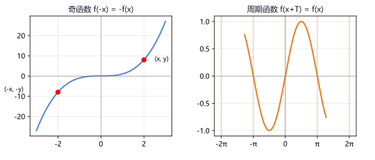
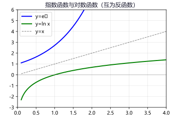
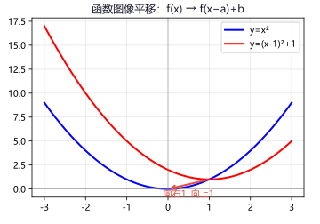
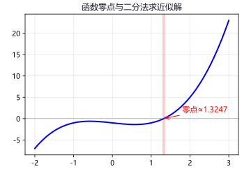

专题一：函数的概念与三要素
函数基础
函数定义：设 A、B 是非空数集，如果按照某个确定的对应关系 f，使对于集合 A 中的任意一个数 x，在集合 B 中都有唯一确定的数 f(x) 和它对应，则称 f：A→B 是从 A 到 B 的一个函数。
三要素：定义域（x 的取值范围）、对应关系（f）、值域（f(x) 的取值范围）。
两个函数相同当且仅当定义域和对应关系完全一致（与表示变量的字母无关）。
定义域的常见限制：
① 分式分母 ≠ 0；② 偶次根号下 ≥ 0；③ 对数真数 > 0；④ 正切 x ≠ π/2 + kπ；
⑤ 组合函数取各部分的交集；⑥ 实际应用题还需考虑实际意义。
求函数解析式的方法：
① 配凑法：已知 f(g(x)) = h(x)，将 h(x) 用 g(x) 表示；
② 换元法：设 t = g(x)，反解 x，代入求解；
③ 待定系数法：已知函数类型（一次、二次等），设出通式，由条件求系数；
④ 方程组法：已知 f(x) 与 f(−x) 或 f(1/x) 的关系式，构造方程组求解。
例 1：求 f(x)=√(x+3)/(x²−5x+6) 的定义域。
解：① x+3 ≥ 0 → x ≥ −3；② x²−5x+6≠0 → (x−2)(x−3)≠0 → x≠2 且 x≠3。
定义域：[−3,2) ∪ (2,3) ∪ (3,+∞)。
例 2：已知 f(x+1)=x²+3x+2，求 f(x)。
解：法一（换元）：设 t=x+1 → x=t−1。
f(t)=(t−1)²+3(t−1)+2 = t²−2t+1+3t−3+2 = t²+t。
∴ f(x)=x²+x。
法二（配凑）：x²+3x+2=(x+1)²+(x+1)，直接用 x+1 表示→f(x)=x²+x。
例 3：已知 f(x) 是二次函数且 f(0)=2，f(1)=4，f(−1)=6，求 f(x)。
解：设 f(x)=ax²+bx+c。f(0)=c=2。
f(1)=a+b+2=4 → a+b=2。
f(−1)=a−b+2=6 → a−b=4。
解得 a=3，b=−1。∴ f(x)=3x²−x+2。
• f(x)=ln(x²−4)+1/√(x−1) 的定义域 答案：(2,+∞)
• 已知 f(x+1)=x²−1，求 f(x) 答案：f(x)=x²−2x
• 已知 2f(x)+f(1/x)=x（x≠0），求 f(x) 答案：f(x)=(2x²−1)/(3x)
专题二：函数的性质
函数性质核心
单调性：对于区间 I 内的任意 x₁f(x₂) 则减。
判断方法：① 定义法（作差/作商）；② 导数法；③ 复合函数（同增异减）。
奇偶性：
① 奇函数：f(−x) = −f(x)，图像关于原点对称。
② 偶函数：f(−x) = f(x)，图像关于y 轴对称。
③ 前提：定义域关于原点对称。
④ 奇+奇=奇，偶+偶=偶，奇×奇=偶，偶×偶=偶，奇×偶=奇。
周期性：若存在非零常数 T 使 f(x+T)=f(x) 对定义域内任意 x 恒成立，则 T 是 f(x) 的一个周期。
常见周期形式：f(x+a)=−f(x)→T=2|a|；f(x+a)=1/f(x)→T=2|a|；f(x+a)=f(x−a)→T=2|a|。
对称性：
① f(a+x)=f(a−x) ↔ f(x) 关于 x=a 对称；
② f(a+x)+f(a−x)=2b ↔ f(x) 关于点 (a,b) 对称；
③ 若 f(x) 有两条对称轴 x=a 和 x=b，则 T=2|a−b|；
④ 若 f(x) 有两个对称中心 (a,c) 和 (b,c)，则 T=2|a−b|。

左：奇函数关于原点对称；右：周期函数 f(x+π)=−f(x) 等多个周期
例 1：判断 f(x)=ln(x+√(1+x²)) 的奇偶性。
解：f(−x)=ln(−x+√(1+x²))。
f(x)+f(−x)=ln[x+√(1+x²)]+ln[−x+√(1+x²)]=ln[(1+x²)−x²]=ln1=0。
∴ f(−x)=−f(x)。f(x) 是奇函数。
例 2：已知 f(x+2)=−f(x)，且 f(1)=3，求 f(2025)。
解：由 f(x+2)=−f(x) 得 f(x+4)=−f(x+2)=f(x)。
∴ T=4。f(2025)=f(2025−4×506)=f(2025−2024)=f(1)=3。
例 3：函数 f(x)=ax³+bx−3，已知 f(−2)=5，求 f(2)。
解：设 g(x)=ax³+bx，则 g(x) 为奇函数，f(x)=g(x)−3。
f(−2)=g(−2)−3=5 → g(−2)=8。
∵ g(x) 是奇函数，g(2)=−g(−2)=−8。
f(2)=g(2)−3=−8−3=−11。
• f(x)=x³+2x 的单调性和奇偶性 答案：奇函数，R上递增
• f(x+3)=1/f(x)，f(1)=2，求 f(2026) 答案：T=6，2026≡4(mod6)，f(4)=1/f(1)=½
专题三：指数函数与对数函数
指对函数
指数函数 y=aˣ（a>0, a≠1）：
① 定义域 R，值域 (0,+∞)，恒过 (0,1)；
② a>1 时单调递增，0
③ 底数越大，x>0 时增长越快，x<0 时衰减越快。
对数函数 y=log_a x（a>0, a≠1）：
① 定义域 (0,+∞)，值域 R，恒过 (1,0)；
② a>1 时单调递增，0
③ 指数函数与对数函数互为反函数，图像关于 y=x 对称。

y=eˣ 与 y=ln x 互为反函数，关于 y=x 对称
例 1：比较大小：2^{0.3}、3^{0.2}、log₂0.3。
解：log₂0.3 < 0（真数<1），所以最小。
2^{0.3} 和 3^{0.2}：两边取对数或都化成立方。
2^{0.3}=2^{3/10}=⁸√8，3^{0.2}=3^{1/5}=⁵√3。
比较 8^{1/8} 和 3^{1/5}：两边 40 次方得 8⁵=32768 和 3⁸=6561。
2^{0.3} > 3^{0.2} > log₂0.3。
例 2：解方程 4ˣ−2ˣ⁺¹−8=0。
解：令 t=2ˣ（t>0），则 4ˣ=(2ˣ)²=t²。
方程化为 t²−2t−8=0 → (t−4)(t+2)=0。
t=4 或 t=−2（舍）。2ˣ=4 → x=2。
例 3：求函数 f(x)=log₂(x²−4x+5) 的值域。
解：t=x²−4x+5=(x−2)²+1 ≥ 1。
因为 y=log₂t 在 t≥1 上递增，所以 log₂t ≥ log₂1 = 0。
值域：[0,+∞)。
• 比较：log₂3 和 log₃4 答案：log₂3>log₃4（换底后比较）
• 解不等式：log₂(x−1) + log₂(x+1) < 3 答案：(1,3)
专题四：幂函数
幂函数
定义：形如 y=x^α（α∈R）的函数叫做幂函数。注意与指数函数（y=aˣ）的区别：幂函数的自变量的底数，指数函数中自变量在指数上。
五个常用幂函数：y=x、y=x²、y=x³、y=x^{½}=√x、y=x⁻¹=1/x。
性质规律：
① 所有幂函数都过点 (1,1)；
② α>0 时在 (0,+∞) 上递增，α<0 时递减；
③ α 为奇数时是奇函数，α 为偶数时是偶函数；
④ 当 α>1 时图像上凸（如 y=x² 开口向上），0<α<1 时图像下凸（如 y=√x）。
例 1：已知幂函数 f(x)=(m²−m−1)x^(m²−2m−1) 的图像不过原点，求 m。
解：由幂函数定义：m²−m−1=1 → m²−m−2=0 → m=−1 或 m=2。
图像不过原点 → 指数 m²−2m−1 ≤ 0。
m=−1：指数=1+2−1=2>0，过原点，舍。
m=2：指数=4−4−1=−1<0，不过原点。∴ m=2。
例 2：比较大小：(2/3)^{0.8}、(3/5)^{0.8}、(2/3)^{0.9}。
解：y=x^{0.8} 是增函数（指数>0），2/3 > 3/5 → (2/3)^{0.8} > (3/5)^{0.8}。
y=(2/3)^x 是减函数（底数<1），0.8 < 0.9 → (2/3)^{0.8} > (2/3)^{0.9}。
(2/3)^{0.8} > (2/3)^{0.9} > (3/5)^{0.8}。
• 函数 y=x^{-½} 的定义域和值域 答案：(0,+∞)，(0,+∞)
• 比较：1.5^{0.2}、0.5^{0.2}、1.5^{−0.2} 答案：1.5^{0.2}>0.5^{0.2}>1.5^{−0.2}
专题五：函数的图像变换
图像变换重点
函数图像变换是高中数学的核心技能，包括平移、伸缩、对称、翻折四大类：
平移变换
① y=f(x±a)：± 在 x 上，左加右减（a>0 向左，−a 向右）
② y=f(x)±b：± 在整体上，上加下减（+b 向上，−b 向下）
伸缩变换
① y=f(ωx)：横坐标变为原来的 1/ω（ω>1 时压缩）
② y=A·f(x)：纵坐标变为原来的 A 倍（A>1 时拉伸）
对称变换
① y=−f(x)：关于 x 轴对称（上下翻转）
② y=f(−x)：关于 y 轴对称（左右翻转）
③ y=−f(−x)：关于原点对称
翻折变换
① y=|f(x)|：将 x 轴下方的部分翻折到 x 轴上方
② y=f(|x|)：保留 y 轴右侧，左侧与之对称（偶函数化）

平移变换：左加右减（x上），上加下减（整体上）
例 1：如何由 y=x² 得到 y=−(x+1)²+2？
解：y=x² → 向左平移 1 单位 → y=(x+1)² → 关于 x 轴对称 → y=−(x+1)² → 向上平移 2 单位 → y=−(x+1)²+2。
例 2：函数 y=f(x) 的图像过 (1,2)，求 y=f(x+1)−3 所过的定点。
解：f(1)=2。令 x+1=1 → x=0。
y = f(0+1)−3 = f(1)−3 = 2−3 = −1。
过定点 (0,−1)。
例 3：画出 y=|log₂x| 和 y=log₂|x| 的草图并说明区别。
解：y=|log₂x|：将 y=log₂x 在 x∈(0,1) 的部分翻折到 x 轴上方。
y=log₂|x|：保留 y=log₂x 的 x>0 部分（偶函数），补充左侧对称部分。
前者在 (0,1) 递减、(1,+∞) 递增；后者在 (−∞,0) 递减、(0,+∞) 递增。
• 由 y=√x 到 y=−√(x+3) 的变换步骤 答案：左移3→关于x轴对称
• y=f(2x) 与 y=f(x) 的周期关系 答案：若 f(x)周期T，则f(2x)周期T/2
专题六：函数零点与方程
零点问题
零点的定义：对于函数 y=f(x)，使 f(x)=0 的实数 x 叫做函数的零点。
注意：零点不是点，而是一个实数（方程 f(x)=0 的实数根）。
零点存在定理：若 f(x) 在 [a,b] 上连续且 f(a)·f(b) < 0，则 f(x) 在 (a,b) 内至少有一个零点。
注：该定理只给出存在性，不能确定零点的个数。若 f(x) 在区间内单调，则可确定唯一性。
二分法求零点：不断将有零点的区间一分为二，使区间的两个端点逐步逼近零点，进而得到零点的近似值。
步骤：确定初始区间 [a,b]（f(a)·f(b)<0）→ 取中点 c=(a+b)/2 → 判断 f(c) 符号 → 缩小范围 → 重复直到满足精度。
复合函数零点问题：设 F(x)=f(g(x))，求 F(x) 的零点可先解 f(t)=0 得 t 的值（或范围），再解 g(x)=t。层层剥开，从外向内逐层分析。

二分法求函数零点：逐步缩小零点所在区间
例 1：函数 f(x)=x³−x−1 在区间 [1,2] 上是否存在零点？
解：f(1)=−1<0，f(2)=5>0。f(x) 在 [1,2] 上连续且 f(1)·f(2)<0。
∴ 在 (1,2) 内至少有一个零点。
又 f'(x)=3x²−1>0（x>1），所以 f(x) 在 [1,2] 上单调递增。
∴ 在 (1,2) 上有唯一零点。
例 2：函数 f(x)=2ˣ+x−4 的零点所在区间为 (k,k+1)（k∈Z），求 k。
解：f(1)=2+1−4=−1<0，f(2)=4+2−4=2>0。
f(1)·f(2)<0，且 f(x) 在 R 上递增。∴ k=1。
例 3：判断 f(x)=|2ˣ−1|−1 的零点个数。
解：令 f(x)=0 → |2ˣ−1|=1。
2ˣ−1=1 → 2ˣ=2 → x=1。
或 2ˣ−1=−1 → 2ˣ=0，无解。
∴ 只有一个零点 x=1。
例 4（复合零点）：若 f(x)=x²−3x+2，g(x)=2ˣ−1，求方程 f(g(x))=0 的解。
解：f(t)=0 → t²−3t+2=0 → (t−1)(t−2)=0 → t=1 或 t=2。
即 g(x)=1 或 g(x)=2。
2ˣ−1=1 → 2ˣ=2 → x=1。
2ˣ−1=2 → 2ˣ=3 → x=log₂3。
解集：{1, log₂3}。
• f(x)=ln x+x−3 的零点所在整数区间 答案：(2,3)
• 用二分法求 f(x)=x³−2 在 (1,2) 内的零点（精确到 0.1）答案：1.26
专题七：函数综合
综合应用
函数综合题考查多个知识点的交汇，常见类型如下：
函数与方程思想的综合：利用函数性质解决方程的解的个数问题，或将方程的根转化为函数图像的交点。
分式函数（对勾函数）：f(x)=x+1/x（双勾函数），在 (0,1] 递减、[1,+∞) 递增，在 x=1 处取最小值 2。f(x)=ax+b/x（a,b>0）有类似性质，在 x=√(b/a) 处取最值。
抽象函数：没有具体解析式的函数．常见的抽象函数模型：
① f(x+y)=f(x)+f(y) → 正比例函数模型 f(x)=kx
② f(xy)=f(x)+f(y) → 对数函数模型 f(x)=log_a x
③ f(x+y)=f(x)f(y) → 指数函数模型 f(x)=aˣ
恒成立与存在性：常见转化方法：
① a ≥ f(x) 恒成立 → a ≥ f_max(x)；② a ≤ f(x) 恒成立 → a ≤ f_min(x)
③ a ≥ f(x) 有解 → a ≥ f_min(x)；④ a ≤ f(x) 有解 → a ≤ f_max(x)
例 1（对勾函数）：求 f(x)=x+4/x（x>0）的最小值。
解：（法一）由基本不等式：x+4/x ≥ 2√(x·4/x)=4，当 x=4/x 即 x=2 时取等。
（法二）f'(x)=1−4/x²，令 f'(x)=0 → x=2（x>0）。
02 时 f'(x)>0 ↗。f(2)=2+2=4。
例 2（抽象函数）：f(x) 满足 f(x+y)=f(x)+f(y)+2xy 且 f(1)=1，求 f(n)（n∈N*）。
解：令 y=1：f(x+1)=f(x)+f(1)+2x = f(x)+1+2x。
∴ f(x+1)−f(x)=2x+1。
f(n) = f(1) + Σ_{k=1}^{n−1}[f(k+1)−f(k)] = 1 + Σ_{k=1}^{n−1}(2k+1)
= 1 + 2×½(n−1)n + (n−1) = 1 + n(n−1) + (n−1) = n²。
∴ f(n)=n²。
例 3（恒成立）：对 ∀x∈R，x²+ax+1 ≥ 0 恒成立，求 a 的取值范围。
解：开口向上的二次函数恒非负 ↔ Δ ≤ 0。
Δ = a²−4 ≤ 0 → −2 ≤ a ≤ 2。
∴ a∈[−2,2]。
例 4（函数与方程的交汇）：求方程 |x²−4x+3| = a 有三个不同的实数根时 a 的值。
解：画 y=|x²−4x+3| 的图像和 y=a 的水平线。
y=x²−4x+3=(x−1)(x−3)，顶点 (2,−1)。绝对值翻折后，在 x∈[1,3] 的部分翻到 x 轴上方。
翻折后的图像在 [1,3] 上的 "尖峰" 高度为 |f(2)|=1。
当 y=a 和 y=|x²−4x+3| 的图像恰好有 3 个交点时，a 应等于函数在顶点处的高度。
实际上当 a=1 时，水平线 y=1 与翻折后图像有 3 个交点。
∴ a=1。
• f(x)=x+9/x（x>0）的最小值 答案：6（x=3 时）
• 抽象函数 f(x+y)=f(x)f(y)，f(1)=2，求 f(n) 答案：f(n)=2ⁿ
• 若 x²−ax+1 > 0 对 x∈(0,2) 恒成立，求 a 的范围 答案：a<2（分离参数 a < x+1/x，右侧最小值2）